Architecture
A small stack of modules, a single drawing strategy, and one narrow door to the hardware.
Layers
Each module only calls the ones below it. The core is the only module that sends data to the port, so everything above it stays hardware-independent and can run against the PC model unchanged.

| Module | Header | Role |
|---|---|---|
| Port | gfx_port.h | Two functions you implement: gfx_port_cmd() and gfx_port_data(). |
| Core | gfx_core.h | Window, burst, clipping, rectangles, colour blending, gradients, shared types. |
| Shapes | gfx_shapes.h | Lines, rectangles, rounded rectangles, circles, rings, arcs, triangles, polygons, integer maths. |
| Text | gfx_text.h | UTF-8 decoding, glyph lookup, anti-aliased drawing, text boxes, integer to string. |
| Images | gfx_image.h | RGB565 images, 4-bit opacity icons, 1-bit bitmaps. |
| Fonts, icons | gfx_fonts.h, gfx_icons.h | Generated const data: six fonts and 32 icons. |
| Widgets | gfx_widgets.h | Stateless drawing functions that use the active theme. |
| Demo, self-test | gfx_demo.h, gfx_selftest.h | Seven demo pages and nine bring-up patterns. Optional. |
Window and burst
The ST7789 keeps a write window: a rectangle of its frame memory. Once the window is set, each pixel written after the RAMWR command lands at the next position inside the window, row by row. The library exploits that everywhere.

The cost model is simple:
- Pixel by pixel: 12 bus writes per pixel (CASET 1 + 4, RASET 1 + 4, RAMWR 1 + 1).
- Window and burst: 11 writes to set the window, then 1 write per pixel. A filled w x h rectangle costs w x h + 11 writes.
A full-screen fill is therefore 57,611 writes instead of 691,200. Shapes that are not rectangles, such as circles and arcs, are painted as one run per row, so they pay 11 writes per row instead of 12 per pixel.

make bench.Clipping
gfx_clip_rect() trims a rectangle to the screen and reports whether anything is left. Every public primitive clips before it touches the port, so drawing partly or completely off screen is safe and never sends a pixel outside the window. The host tests count window violations and require zero.
Text
Fonts are proportional bitmaps with 4 bits of opacity per pixel, two pixels per byte. When you give a background colour, the library builds a 16-entry colour table between background and text and draws each glyph as one window the size of its cell, so the glyph and its background go out in a single burst. Without a background there is nothing to blend with, so the _t variants paint only pixels at 50 percent opacity or more, run by run.
Strings are UTF-8. The decoder understands one- and two-byte sequences up to U+00FF and maps anything else to ?.
Shapes without floating point
- Lines use Bresenham, grouped into horizontal or vertical runs so each run is one burst.
- Circles and rings use an integer square root and the test dx2 + dy2 ≤ r2 + r, which gives rounder results than the plain radius test.
- Arcs compare each pixel with the start and end directions using cross products, with 0 degrees pointing up and angles growing clockwise.
- Polygons are filled with the even-odd rule on a grid of 1/16 pixel, so concave shapes such as stars work. Thick lines are rotated rectangles plus a circle at each end.
- Sine and cosine come from a 91-entry table in Q14 fixed point.
Widgets
Widgets keep no state. You pass the value, and when it changes you call the function again. They draw over a flat colour from the active theme so text and icons blend exactly. Because they only call the layers below, they behave the same on the board and on the PC model.
The port
The whole hardware surface is two functions. After CASET or RASET, gfx_port_data() carries 8-bit parameters in the low byte; after RAMWR it carries 16-bit RGB565 pixels. See Write the port for FMC, SPI and 8-bit examples.
Design decisions
| Decision | Reason |
|---|---|
| Integer arithmetic only | Runs on cores without an FPU, gives identical pixels on every host, and makes golden hashes stable. |
| No dynamic memory, no global drawing state beyond the active theme | Predictable memory use, nothing to initialise or free. |
| Two-function port | Keeps the library independent of HAL versions, buses and boards. |
| Text with a background fills the whole glyph cell | One window per glyph is far cheaper than a window per run, and anti-aliasing needs a known background anyway. |
| Fixed 240 x 240 geometry | Keeps clipping and widgets simple. See the known limits. |
| Generated data in the repository | Fonts and icons are produced by scripts in tools/ and committed, so a build needs no Python and no font files. |
Single-header build
tools/make_single_header.py concatenates the headers and sources into single_header/lcd_gfx.h, in the style of the stb libraries. The declarations are always visible; the implementation is compiled only where GFX_IMPLEMENTATION is defined. A test links one translation unit with the implementation and another without it, runs the whole suite on that build, and checks that every demo page hashes to the same value as the multi-file build.